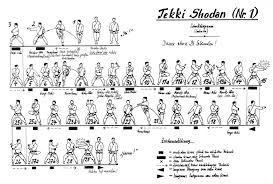

La cintura marrone rappresenta una delle fasi più cruciali nel percorso verso il raggiungimento del Dan. In questa fase, il karateka deve affinare non solo le tecniche già apprese, ma anche concentrarsi sullo sviluppo della propria disciplina mentale e fisica. La maestria nella forma e nell'esecuzione dei kata, insieme alla capacità di eseguire tecniche con precisione e velocità, è essenziale per avanzare ulteriormente nel percorso. Questo è il momento in cui l'apprendimento diventa più profondo, e ogni movimento viene eseguito con maggiore consapevolezza.
Tekki Shodan

Tekki Shodan è uno dei kata fondamentali del Karate Shotokan. Questo kata si concentra sullo sviluppo della forza e della stabilità nelle posizioni, in particolare nella postura del cavaliere (Kiba Dachi). La sequenza di movimenti è pensata per allenare il corpo a lavorare in sinergia, sviluppando potenza e precisione, oltre a rafforzare la concentrazione mentale. Il kata aiuta anche a migliorare la capacità di difesa e contrattacco, utilizzando movimenti di blocco e colpi ravvicinati.
Bassai Dai

Bassai Dai è uno dei kata più importanti e complessi del Karate. Il suo nome significa "rompere la fortezza", e il kata è concepito per insegnare al praticante a superare le difficoltà con forza e determinazione. I movimenti sono aggressivi, con un ampio uso di attacchi diretti e movimenti di blocco potenti. La tecnica aiuta a migliorare la velocità, la potenza dei colpi e la capacità di adattamento alle situazioni di combattimento. Bassai Dai è fondamentale per sviluppare una solida base nel Karate.
Kanku Dai

Kanku Dai è un kata che simboleggia l'osservazione dell'universo, ed è uno dei kata più complessi e significativi del Karate. Il kata implica movimenti che richiedono grande precisione e coordinazione, con focus su attacchi di lunga distanza e posizioni che combinano fermezza e agilità. Eseguire Kanku Dai sviluppa la capacità di muoversi in modo fluido e potente, mentre si impara ad anticipare e reagire agli attacchi dell'avversario. La sequenza è una combinazione di forza, eleganza e velocità.
Kihon Ippon
Kihon Ippon Kumite è una forma di combattimento che si concentra sull'apprendimento e sull'esecuzione di attacchi e difese in modo strutturato. Durante questo esercizio, il praticante esegue un attacco preciso verso un avversario che si prepara a difendersi in modo specifico. L'obiettivo principale di Kihon Ippon è sviluppare la comprensione delle distanze di combattimento, delle tecniche di difesa e delle tempistiche, migliorando la reattività e la capacità di eseguire tecniche con forza e velocità.
Jiyu Ippon
Jiyu Ippon Kumite è una forma di combattimento più libera rispetto al Kihon Ippon, che permette al praticante di reagire in base alla situazione. Durante questo esercizio, l'avversario può attaccare liberamente, ma il karateka deve rispondere con tecniche di difesa, contrattacco e blocchi specifici. L'obiettivo è imparare a combattere con libertà, ma mantenendo il controllo delle proprie tecniche. Jiyu Ippon sviluppa la capacità di adattarsi rapidamente ai cambiamenti nel combattimento e di rispondere in modo efficace.
Libero
Il Kumite libero, o combattimento libero, è la fase del Karate in cui il praticante ha la libertà di applicare tutte le tecniche apprese nei kata e nel Kihon in un combattimento senza restrizioni. Qui, il karateka deve essere in grado di reagire a qualsiasi attacco dell'avversario, utilizzando le giuste tecniche di attacco, difesa e contrattacco. Il Kumite libero richiede una grande comprensione delle distanze, del timing e della strategia, e aiuta il praticante a sviluppare la creatività nel combattimento.
Le Tecniche per la Cintura Marrone
La cintura marrone è una fase fondamentale del Karate, che segna il passaggio verso una comprensione più profonda e avanzata delle tecniche. Durante questa fase, il praticante deve perfezionare tutte le tecniche apprese nei livelli precedenti e imparare a combinarle in modo fluido e potente. Le tecniche principali includono il Jodan Mae Geri, il Fusoku, e il Gyaku Zuki Mawashi, ognuna delle quali richiede grande precisione e forza.
- Jodan Mae Geri - Calcio alto mirato alla testa dell'avversario, utilizzato per mantenere il controllo della distanza e come tecnica di attacco potente.
- Fusoku - Tecnica di equilibrio che sviluppa la stabilità e il controllo mentale, fondamentale per eseguire altri movimenti complessi.
- Gyaku Zuki Mawashi - Pugno inverso che impiega la rotazione del corpo per aumentare la potenza, utile sia in attacco che in difesa.
La cintura marrone segna un importante passaggio verso l'eccellenza, con il praticante che inizia a combinare le tecniche in modo più naturale e potente, avvicinandosi sempre di più al raggiungimento del Dan.